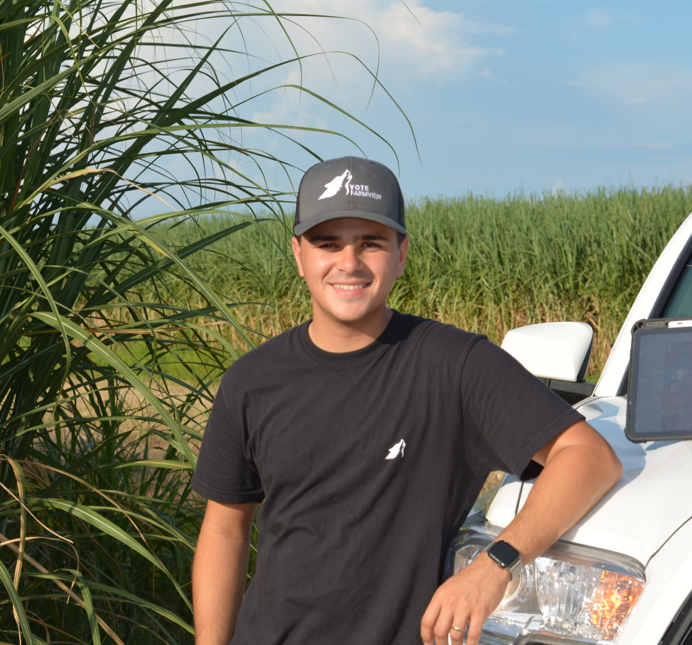

Feito a partir do campo.
Em 2019, antes de qualquer um pensar em um software feito só para a cana, Caio Phillipi já estava no campo, mapeando fazendas à mão ao lado do sogro, Bret Barrick, consultor agrícola respeitado, com décadas de experiência no setor canavieiro da Louisiana.
O que começou como mapas sob medida para alguns produtores virou algo maior. O Yote Farmview se tornou o primeiro app feito exclusivamente para produtores de cana nos Estados Unidos, e aqueles primeiros produtores continuam clientes até hoje.
O Yote não é uma empresa grande. Não tem call center, fila de chamados nem robô de atendimento. Quando você entra em contato, fala com o Caio. E a configuração da sua fazenda fica por nossa conta.
Isso não é uma limitação. É justamente esse o ponto.
Conheça a nossa história